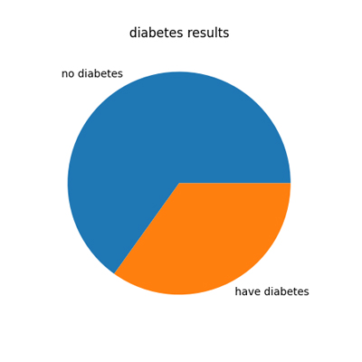
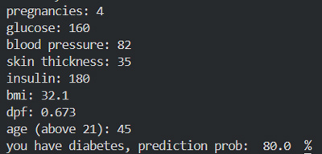
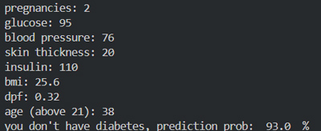

1. Choosing data set
The Diabetes Dataset is a popular machine learning dataset derived from the Pima Indians Diabetes Database. It is used to predict the presence of diabetes in individuals based on diagnostic measurements.
Dataset Features
| Feature | Description |
|---|---|
| Pregnancies | Number of times the patient has been pregnant. |
| Glucose | Plasma glucose concentration after a 2-hour oral glucose tolerance test. |
| Blood Pressure | Diastolic blood pressure (mm Hg). |
| Skin Thickness | Triceps skinfold thickness (mm). |
| Insulin | 2-hour serum insulin (mu U/ml). |
| BMI | Body Mass Index, defined as weight in kg/(height in m)^2. |
| DiabetesPedigreeFunction | Likelihood of diabetes based on family history. |
| Age | Age of the patient (years). |
| Outcome | Target variable (1 = Diabetes, 0 = No Diabetes). |
Applications
- Predicting diabetes using machine learning models.
- Feature engineering and exploring data relationships.
- Practicing data preprocessing, such as handling missing values.
- Evaluating models with metrics like accuracy and ROC-AUC.
Challenges
The dataset presents some challenges, such as:
- Imbalanced data between diabetic and non-diabetic outcomes.
- Handling invalid or missing values (e.g., 0 in Glucose, Blood Pressure).
- Exploring correlations between features like BMI and Insulin.
2. Cleaning the data
To clean the data, we refered to the experts to get the range of each feature so that we can discard special cases that will affect the precision of the model.
Normally,when cleaning extraordinary values, these latter are replaced by the mean value or the average of the feature.But since this data set is medical set, which is sensitive information, we will be dropping the whole row of a wrong data, luckily this data is somehow cleaned so not alot rows will be dropped
here below the code for cleaning this data set:
def vglc(v):
return 0<=float(v)<=300 # return true if the value is between 0 and 300
def vbld(v):
return 0<=float(v)<=300 # float function is used to assure the value is natural number
def vskin(v):
return 0<=float(v)<=60
def vinsulin(v):
return 0<=float(v)<=500
def vbmi(v):
return 10<=float(v)<=60
def vdpf(v):
return 0<=float(v)<=3
def vage(v):
return 21<=float(v)<=120
def vprg(v):
return 0<=float(v)<=20
def flt(nb):
try:
float(nb)
return True
except ValueError:
return False
for i, row in data.iterrows():
if not vprg(row['Pregnancies']) or not
flt(row['Pregnancies']):
indices_to_drop.append(i)
elif not vglc(row['Glucose']) or not flt(row['Glucose']):
indices_to_drop.append(i)
elif not vbld(row['BloodPressure']) or not
flt(row['BloodPressure']):
indices_to_drop.append(i)
elif not vskin(row['SkinThickness']) or not
flt(row['SkinThickness']):
indices_to_drop.append(i)
elif not vinsulin(row['Insulin']) or not flt(row['Insulin']):
indices_to_drop.append(i)
elif not vbmi(row['BMI']) or not flt(row['BMI']):
indices_to_drop.append(i)
elif not vdpf(row['DiabetesPedigreeFunction']) or not flt(row['DiabetesPedigreeFunction']):
indices_to_drop.append(i)
elif not vage(row['Age']) or not flt(row['Age']):
indices_to_drop.append(i)
data.drop(indices_to_drop, axis=0, inplace=True) # drop all rows in the list
3. Analyzing the data
The data set chosen is already visually analyzed in the site, These visualizations shows that all features are important factors in detecting diabetes.
Here is addition analysis:
lookup={1:"have diabetes",0:"no diabetes"} # change the values to corresponding string
temp=data["Outcome"].apply(lambda x: lookup.get(x))
results=temp.value_counts()
plt.pie(results.values, labels=results.index)
plt.title("diabetes results")
plt.show()
Here's the pie chart:

4. Deploying the model
To deploy the model we used supervised learning since we have to classified groups
have diabetes, and do not have
Why Use RandomForestClassifier?
The RandomForestClassifier is a powerful and versatile machine learning algorithm. Here are the key reasons why it is widely used:
- Handles High Dimensionality: Works effectively with datasets having many features.
- Reduces Overfitting: Combines multiple decision trees to create a more generalizable model.
- Robust to Missing Data: Can handle missing values and outliers effectively.
- Provides Feature Importance: Helps understand which features contribute the most to predictions.
- Versatility: Works for both binary and multi-class classification problems.
- Captures Nonlinear Relationships: Handles complex relationships between features and the target variable.
- Scalability: Can be parallelized for large datasets.
By combining the predictions of multiple decision trees, the RandomForestClassifier provides a balance of accuracy, robustness, and interpretability, making it a popular choice in machine learning.
from sklearn.model_selection import train_test_split
from sklearn.model_selection import cross_val_score,KFold
from sklearn.ensemble import RandomForestClassifier
x=data.drop("Outcome",axis=1)# save all features to x
y=data["Outcome"]# save the outcome to y
xtrain,xtest,ytrain,ytest=train_test_split(x,y,test_size=0.2, random_state=42)
model= RandomForestClassifier()
kf=KFold(n_splits=5,shuffle=True,random_state=42)
scores=cross_val_score(model,xtrain,ytrain,cv=kf,scoring='accuracy')
print("cross-validation scores: ",scores)
print("accuracy: ",scores.mean())
model.fit(xtrain,ytrain)# Deploying the model
5. Testing results
The values down are provided by chatgpt to test the results:
| Label | Pregnancies | Glucose | Blood Pressure | Skin Thickness | Insulin | BMI | DPF | Age |
|---|---|---|---|---|---|---|---|---|
| 1 (Diabetes) | 4 | 160 | 82 | 35 | 180 | 32.1 | 0.673 | 45 |
| 1 (Diabetes) | 6 | 195 | 90 | 25 | 210 | 34.5 | 1.2 | 52 |
| 0 (No Diabetes) | 1 | 85 | 70 | 15 | 85 | 23.4 | 0.489 | 30 |
| 0 (No Diabetes) | 2 | 95 | 76 | 20 | 110 | 25.6 | 0.320 | 38 |
Here are the results of our model:


6. Full Code
# import needed libraries
import pandas as pd
from sklearn.model_selection import train_test_split
from sklearn.model_selection import cross_val_score, KFold
from sklearn.ensemble import RandomForestClassifier
# load data
data=pd.read_csv("C:\\Users\\path_to\\datasheet.csv")
indices_to_drop = []
# prepare the functions for validation
def vglc(v):
return 0<=float(v)<=300
def vbld(v):
return 0<=float(v)<=300
def vskin(v):
return 0<=float(v)<=60
def vinsulin(v):
return 0<=float(v)<=500
def vbmi(v):
return 10<=float(v)<=60
def vdpf(v):
return 0<=float(v)<=3
def vage(v):
return 21<=float(v)<=120
def vprg(v):
return 0<=float(v)<=20
def flt(nb):
try:
float(nb)
return True
except ValueError:
return False
# drop the rows
for i, row in data.iterrows():
if not vprg(row['Pregnancies']) or not
flt(row['Pregnancies']):
indices_to_drop.append(i)
elif not vglc(row['Glucose']) or not flt(row['Glucose']):
indices_to_drop.append(i)
elif not vbld(row['BloodPressure']) or not
flt(row['BloodPressure']):
indices_to_drop.append(i)
elif not vskin(row['SkinThickness']) or not
flt(row['SkinThickness']):
indices_to_drop.append(i)
elif not vinsulin(row['Insulin']) or not flt(row['Insulin']):
indices_to_drop.append(i)
elif not vbmi(row['BMI']) or not flt(row['BMI']):
indices_to_drop.append(i)
elif not vdpf(row['DiabetesPedigreeFunction']) or not flt(row['DiabetesPedigreeFunction']):
indices_to_drop.append(i)
elif not vage(row['Age']) or not flt(row['Age']):
indices_to_drop.append(i)
# train and deploy the model
data.drop(indices_to_drop, axis=0, inplace=True)
x=data.drop("Outcome",axis=1)
y=data["Outcome"]
xtrain,xtest,ytrain,ytest=train_test_split(x,y,test_size=0.2,
random_state=42)
model= RandomForestClassifier()
kf=KFold(n_splits=5,shuffle=True,random_state=42)
scores=cross_val_score(model,xtrain,ytrain,cv=kf,scoring='accuracy')
print("cross-validation scores: ",scores)
print("accuracy: ",scores.mean())
model.fit(xtrain,ytrain)
# take input from user and validate
it
while(True):
prg=input("pregnancies: ")
if flt(prg) and vprg(prg):
break
print("enter a valid input")
while(True):
glc=input("glucose: ")
if flt(glc) and vglc(glc):
break
print("enter a valid input")
while(True):
bld=input("blood pressure: ")
if flt(bld) and vbld(bld):
break
print("enter a valid input")
while(True):
skin=input("skin thickness: ")
if flt(skin) and vskin(skin):
break
print("enter a valid input")
while(True):
insulin=input("insulin: ")
if flt(insulin) and vinsulin(insulin):
break
print("enter a valid input")
while(True):
bmi=input("bmi: ")
if flt(bmi) and vbmi(bmi):
break
print("enter a valid input")
while(True):
dpf=input("dpf: ")
if flt(dpf) and vdpf(dpf):
break
print("enter a valid input")
while(True):
age=input("age (above 21): ")
if flt(age) and vage(age):
break
print("enter a valid input")
# add the input to the data sheet and run
the model
feature_names=x.columns
ans=pd.DataFrame([[prg,glc,bld,skin,insulin,bmi,dpf,age]],columns=feature_names)
prediction=model.predict(ans)
prediction_prob=model.predict_proba(ans)
# Display the results
if prediction:
print("you have diabetes, prediction prob:
",prediction_prob[0][1]*100, " %")
else:
print("you don't have diabetes, prediction prob:
",prediction_prob[0][0]*100, " %")